Blasmusik mit Herz 'n' Beat.
Eure Live-Combo vom Kaiserstuhl für Rock, Pop & Blasmusik. Buchbar für Vereins-, Dorf- und Weinfeste, Hochzeiten und alles, was nach echter Bühne ruft.
9 Feste 2026, gespielt u. a. für die Musikvereine Burkheim, Eichstetten, Gottenheim, Maleck und Oberrimsingen
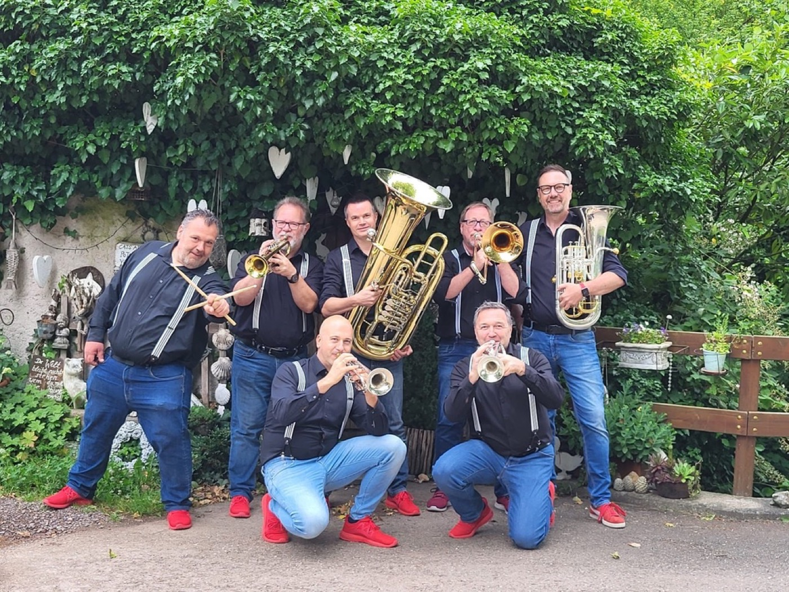
Tradition trifft Moderne.
Live auf eurer Bühne.
Wir sind blech'n'takt, eine Blech-Combo mit Schlagzeug vom Kaiserstuhl. Drei Trompeten, Posaune, Euphonium, Tuba und Drums. Was nach Tradition klingt, hat ordentlich Druck unter dem Kessel. Sound, der groovt statt staubt.
Besetzung · 7 Musiker, alles live, kein Playback
- 3× Trompete
- Posaune
- Euphonium
- Tuba
- Drums
Unser Set
Vom getragenen Walzer beim Aperitif bis zur vollen Tanzfläche um Mitternacht. Wir passen das Set an euer Event an.
Wir bringen mit
Anlage · Mikros · Licht · Notenständer
Ihr stellt
Bühne · Strom
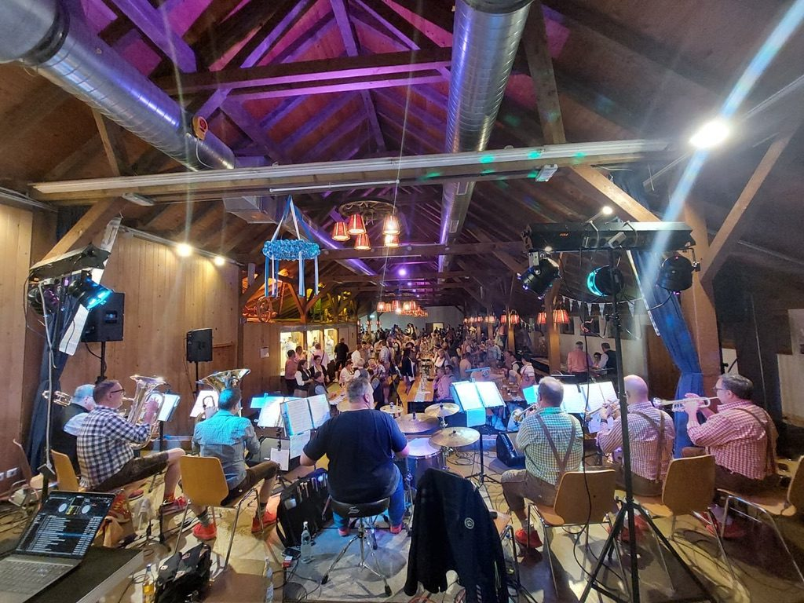
Wie klingt das live?
Fünf Live-Eindrücke von unseren Festen, alle auf YouTube.

Auf der Bühne.
Eindrücke aus unseren letzten Auftritten.
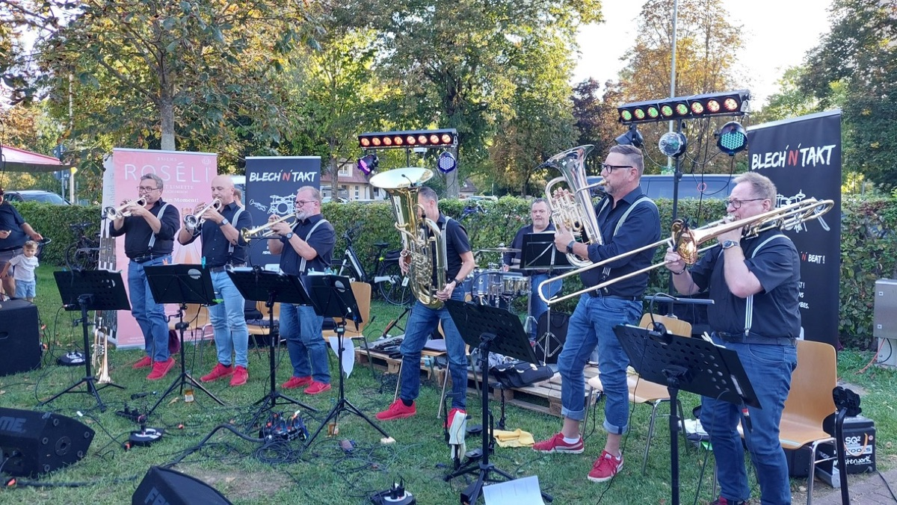
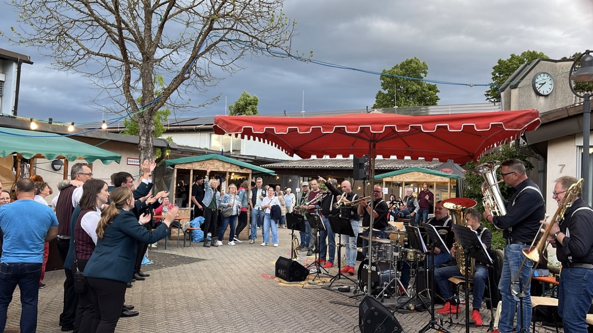
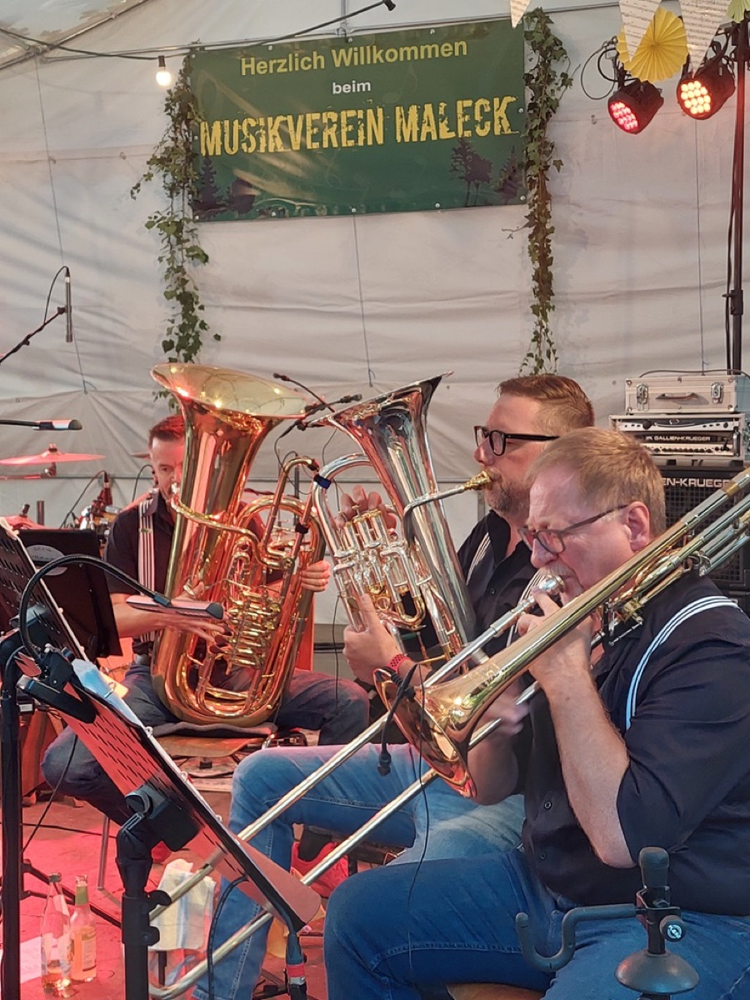
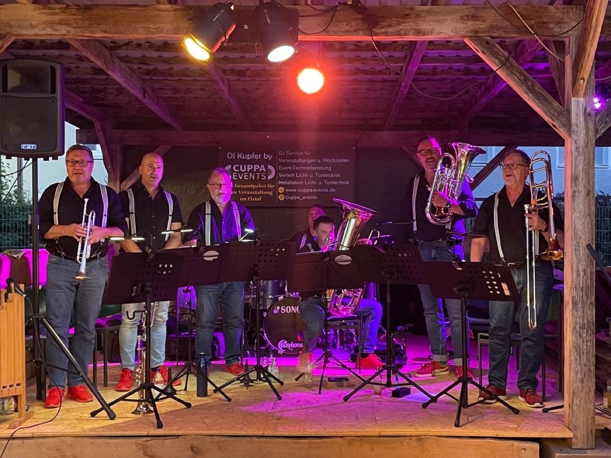
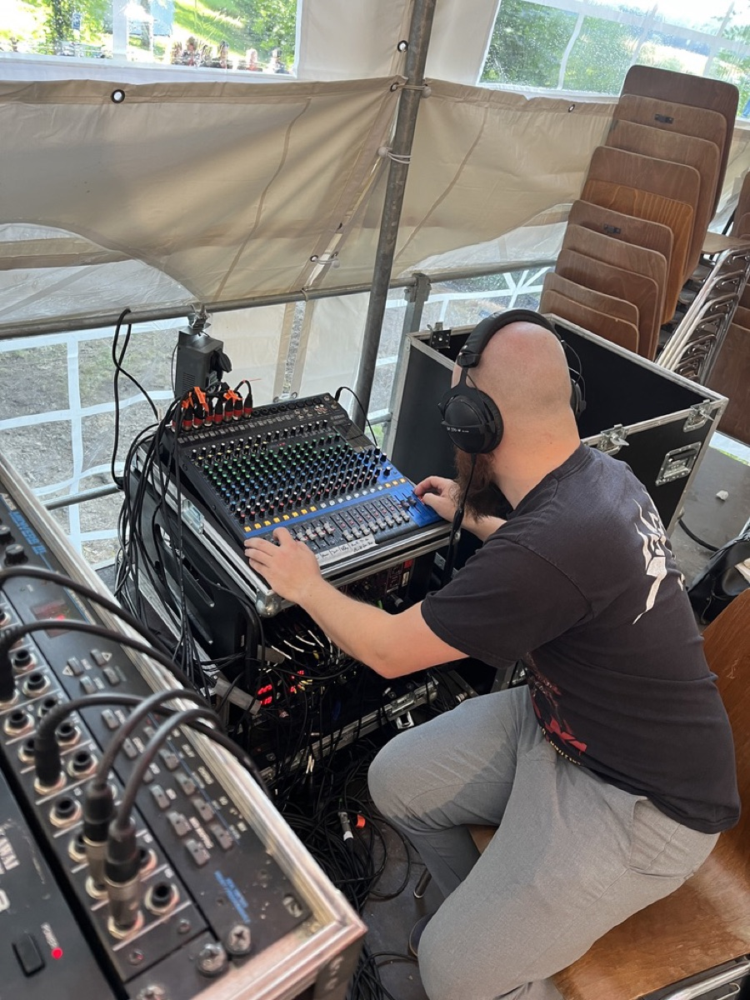
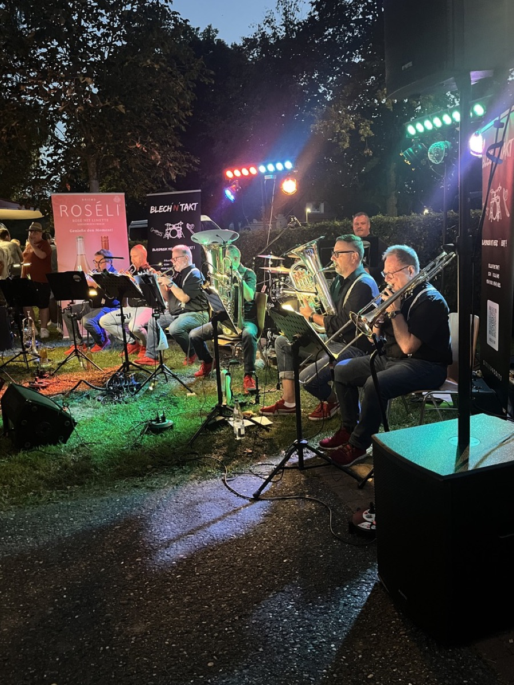
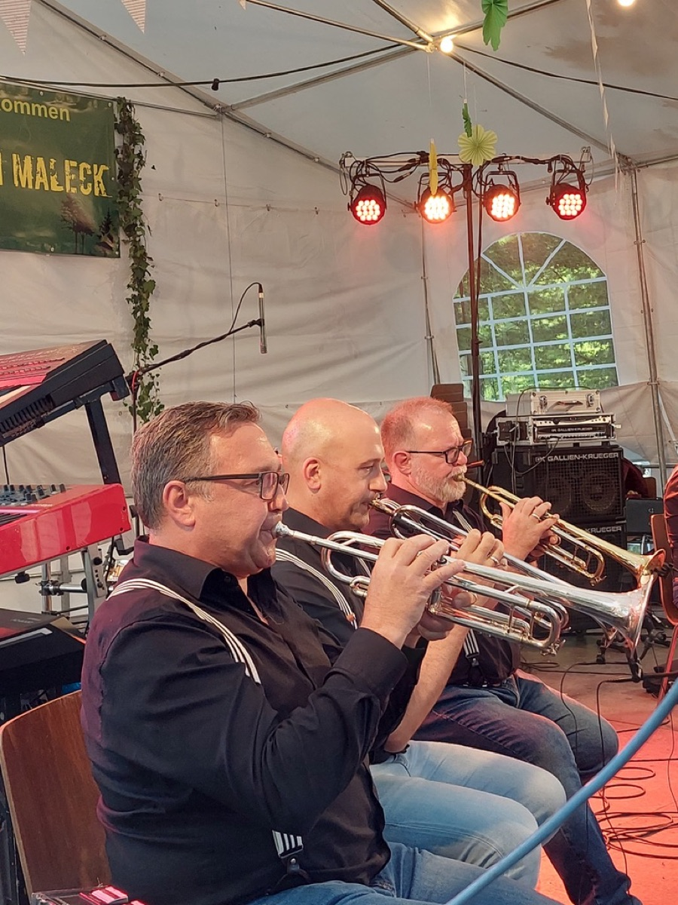
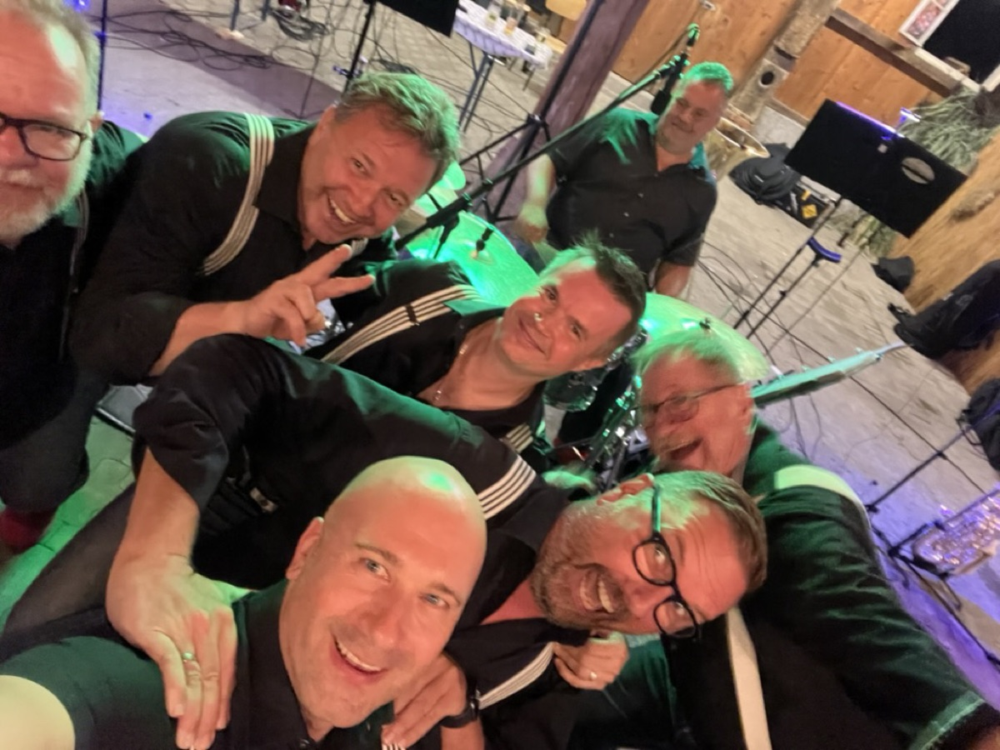
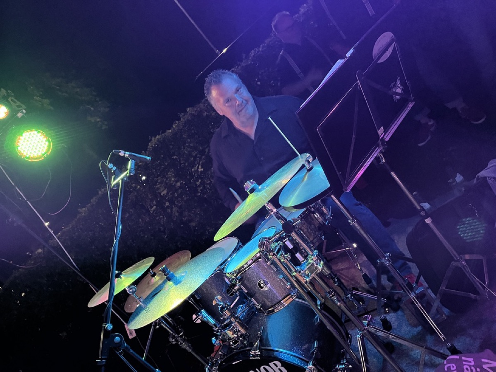
Unsere Termine 2027.
Die ersten Feste stehen. Für weitere Termine nehmen wir gern Anfragen an.
Termin anfragen: 0171/9900177-
Freitag, 25.06.2027 19:00 Uhr
Burkheim Open-Air
Brünnele-Garten · Burkheim · mit der Stadtkapelle Burkheim
Auf Karte zeigen → -
Freitag, 03.09.2027 18:00 Uhr
Schwibbogenfest
Eichstetten · beim Musikverein Eichstetten
Auf Karte zeigen → -
Sonntag, 05.09.2027 18:00 Uhr
Zwiebelkuchenfest
Burkheim · bei der Stadtkapelle Burkheim
Auf Karte zeigen →
Dazu 4 private Feiern: 14.01. Abschlussfeier · 05.06. Weinwanderung · 19.06. Hochzeit · 01.10. Geburtstag (70)
Saison 2026 · 9 Feste, danke fürs Mitfeiern!
- 19.06. Glotterfest Nimburg
- 21.06. Weingut Kiefer Eichstetten
- 11.07. Schlossparkfest Oberrimsingen
- 20.07. Waldfest Emmendingen-Maleck
- 05.09. Hahlereifest Gottenheim
- 07.09. Burkheimer Weintage Burkheim
- 19.09. Zwiebelkuchenfest Wasenweiler
- 02.10. Hochzeit privat
- 24.10. Oktoberfest Wasenweiler
Was wir spielen, ein Auszug.
Über 100 Songs im Programm. Hier eine kleine Kostprobe.
Tradition
- Böhmischer Traum
- Abel Tasman
- Kaiserin Sissi
- Südböhmische Polka
- Der Lieblingstrommler
Rock & Pop
- Don't Stop Believin'
- Hey Jude
- The Story
- Bei mir bist du schön
- How Deep Is Your Love
Stimmung
- Umtahemd
- Düsco Hüt
- Come On Eileen
- Nena
- Sternenhimmel
Vermisst ihr was? Fragt uns. Wir lernen vieles dazu. 0171/9900177
Lasst uns reden.
Ein Anruf reicht. Oder eine kurze Mail. Wir besprechen euer Event, klären Datum und Setup und sagen euch ehrlich, ob wir passen. Wenn nicht, empfehlen wir euch gern eine andere Band.
Am Telefon: Klaus, Trompete & Flügelhorn
0171/9900177 WhatsApp an KlausLieber per Mail? kontakt@blechntakt.de
Authentisch. Unkompliziert. Professionell.
Wir stellen das Programm auf euer Fest ein, bringen unsere Technik mit
und kümmern uns um den Rest. Ihr habt den Kopf frei für eure Gäste.
Am Ende des Abends heißt es oft: Nächstes Jahr wieder!
Gespielt für
Musikvereine
- Eichstetten
- Gottenheim
- Maleck
- Nimburg-Bottingen
- Oberrimsingen
- Waltershofen
- Wasenweiler
Außerdem
- Stadtkapelle Burkheim
- Sportverein Wasenweiler
- Weingut Briem
- Weingut Kiefer
Klaus freut sich auf euren Anruf: 0171/9900177